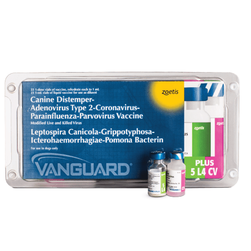
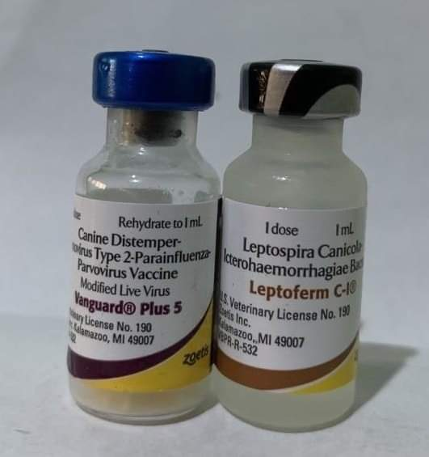
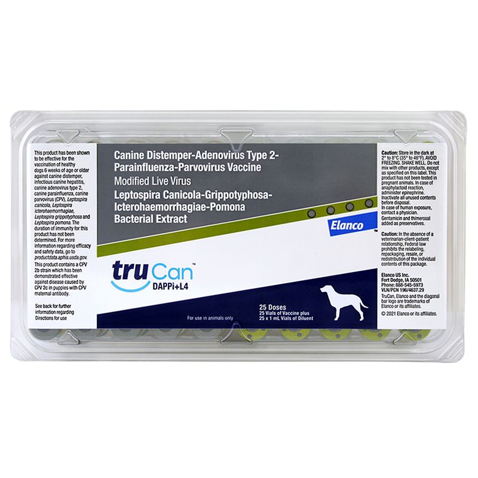
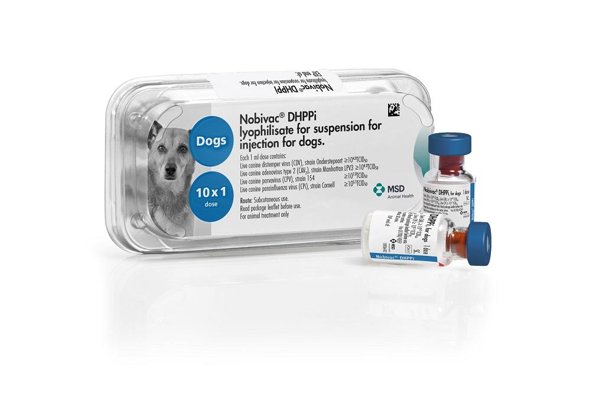

ESSENTIAL VACCINES FOR YOUR SHIH TZU
COMBINATION VACCINES
NO.1
4 in 1 VACCINE

Understanding the "4-in-1" Canine Vaccine:
In veterinary practice, the term "4-in-1" vaccine typically refers to a combination vaccine that protects dogs against four major diseases:
1. Canine Distemper Virus (CDV): A highly contagious viral disease affecting the respiratory, gastrointestinal, and nervous systems.
2. Canine Adenovirus Type 1 (CAV-1): Causes infectious canine hepatitis, leading to liver disease.
3. Canine Parvovirus (CPV): A severe viral infection causing acute gastrointestinal illness.
Canine Parainfluenza Virus (CPiV): Contributes to respiratory infections, often part of the kennel cough complex.
NO.2
5 in 1 VACCINE

DHLPP is a combination vaccine that protects dogs against five diseases:
Distemper, Hepatitis, Leptospirosis, Parvovirus, and Parainfluenza. The study utilized digital tools to increase awareness and uptake of both anti-rabies and DHLPP vaccinations. The findings indicated that during the campaign, the average monthly uptake of DHLPP vaccines increased significantly from 25.7 ± 6.2 to 40.0 ± 6.6, highlighting the effectiveness of digital tools in promoting vaccination.
In veterinary practice, combination vaccines are formulated to protect dogs against multiple diseases with a single injection. The "DHLPP" vaccine is a common 5-in-1 combination that safeguards against:
Distemper: A viral disease affecting the respiratory, gastrointestinal, and nervous systems.
Hepatitis (Adenovirus-1): Targets the liver, leading to severe illness.
Leptospirosis: A bacterial infection affecting kidneys and other organs.
Parvovirus: Causes severe gastrointestinal distress and can be fatal.
Parainfluenza: Contributes to respiratory infections.
NO.3
6 in 1 VACCINE

Components of the DHLPP-C 6-in-1 Vaccine:
D – Canine Distemper Virus (CDV): A highly contagious and often fatal viral disease affecting the respiratory, gastrointestinal, and nervous systems.
H – Canine Hepatitis (Adenovirus-1, CAV-1): Causes severe liver disease and eye damage.
L – Leptospirosis: A bacterial infection that can cause kidney and liver failure and is zoonotic (can spread to humans).
P – Canine Parvovirus (CPV-2): A deadly virus that causes severe vomiting, diarrhea, and dehydration, especially in puppies.
P – Canine Parainfluenza Virus (CPiV): Contributes to infectious tracheobronchitis (kennel cough).
C – Canine Coronavirus (CCoV): A virus that affects the gastrointestinal system, leading to vomiting and diarrhea.

NO.4
7 in 1 VACCINE

Components of the DHLPP-Cr 7-in-1 Vaccine:
D – Canine Distemper Virus (CDV): A highly contagious viral disease affecting the respiratory, gastrointestinal, and nervous systems.
H – Canine Hepatitis (Adenovirus-1, CAV-1): Causes severe liver disease and eye damage.
L – Leptospirosis: A bacterial infection that affects the kidneys and liver, and is zoonotic (can spread to humans).
P – Canine Parvovirus (CPV-2): A deadly virus that causes vomiting, diarrhea, and dehydration, particularly dangerous in puppies.
P – Canine Parainfluenza Virus (CPiV): Contributes to kennel cough, a respiratory infection in dogs.
C – Canine Coronavirus (CCoV): Affects the gastrointestinal system, leading to vomiting and diarrhea.
Cr – Canine Rabies (RABV): A fatal viral disease that affects the nervous system and is zoonotic (can spread to humans).